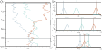
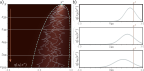
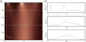
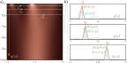
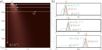

import numpy as np
import matplotlib.pyplot as plt
from matplotlib.colors import ListedColormap
from operator import itemgetter
#Create pretty colormap as in book
my_colormap_vals_hex =('2a0902', '2b0a03', '2c0b04', '2d0c05', '2e0c06', '2f0d07', '300d08', '310e09', '320f0a', '330f0b', '34100b', '35110c', '36110d', '37120e', '38120f', '39130f', '3a1410', '3b1411', '3c1511', '3d1612', '3e1613', '3f1713', '401714', '411814', '421915', '431915', '451a16', '461b16', '471b17', '481c17', '491d18', '4a1d18', '4b1e19', '4c1f19', '4d1f1a', '4e201b', '50211b', '51211c', '52221c', '53231d', '54231d', '55241e', '56251e', '57261f', '58261f', '592720', '5b2821', '5c2821', '5d2922', '5e2a22', '5f2b23', '602b23', '612c24', '622d25', '632e25', '652e26', '662f26', '673027', '683027', '693128', '6a3229', '6b3329', '6c342a', '6d342a', '6f352b', '70362c', '71372c', '72372d', '73382e', '74392e', '753a2f', '763a2f', '773b30', '783c31', '7a3d31', '7b3e32', '7c3e33', '7d3f33', '7e4034', '7f4134', '804235', '814236', '824336', '834437', '854538', '864638', '874739', '88473a', '89483a', '8a493b', '8b4a3c', '8c4b3c', '8d4c3d', '8e4c3e', '8f4d3f', '904e3f', '924f40', '935041', '945141', '955242', '965343', '975343', '985444', '995545', '9a5646', '9b5746', '9c5847', '9d5948', '9e5a49', '9f5a49', 'a05b4a', 'a15c4b', 'a35d4b', 'a45e4c', 'a55f4d', 'a6604e', 'a7614e', 'a8624f', 'a96350', 'aa6451', 'ab6552', 'ac6552', 'ad6653', 'ae6754', 'af6855', 'b06955', 'b16a56', 'b26b57', 'b36c58', 'b46d59', 'b56e59', 'b66f5a', 'b7705b', 'b8715c', 'b9725d', 'ba735d', 'bb745e', 'bc755f', 'bd7660', 'be7761', 'bf7862', 'c07962', 'c17a63', 'c27b64', 'c27c65', 'c37d66', 'c47e67', 'c57f68', 'c68068', 'c78169', 'c8826a', 'c9836b', 'ca846c', 'cb856d', 'cc866e', 'cd876f', 'ce886f', 'ce8970', 'cf8a71', 'd08b72', 'd18c73', 'd28d74', 'd38e75', 'd48f76', 'd59077', 'd59178', 'd69279', 'd7937a', 'd8957b', 'd9967b', 'da977c', 'da987d', 'db997e', 'dc9a7f', 'dd9b80', 'de9c81', 'de9d82', 'df9e83', 'e09f84', 'e1a185', 'e2a286', 'e2a387', 'e3a488', 'e4a589', 'e5a68a', 'e5a78b', 'e6a88c', 'e7aa8d', 'e7ab8e', 'e8ac8f', 'e9ad90', 'eaae91', 'eaaf92', 'ebb093', 'ecb295', 'ecb396', 'edb497', 'eeb598', 'eeb699', 'efb79a', 'efb99b', 'f0ba9c', 'f1bb9d', 'f1bc9e', 'f2bd9f', 'f2bfa1', 'f3c0a2', 'f3c1a3', 'f4c2a4', 'f5c3a5', 'f5c5a6', 'f6c6a7', 'f6c7a8', 'f7c8aa', 'f7c9ab', 'f8cbac', 'f8ccad', 'f8cdae', 'f9ceb0', 'f9d0b1', 'fad1b2', 'fad2b3', 'fbd3b4', 'fbd5b6', 'fbd6b7', 'fcd7b8', 'fcd8b9', 'fcdaba', 'fddbbc', 'fddcbd', 'fddebe', 'fddfbf', 'fee0c1', 'fee1c2', 'fee3c3', 'fee4c5', 'ffe5c6', 'ffe7c7', 'ffe8c9', 'ffe9ca', 'ffebcb', 'ffeccd', 'ffedce', 'ffefcf', 'fff0d1', 'fff2d2', 'fff3d3', 'fff4d5', 'fff6d6', 'fff7d8', 'fff8d9', 'fffada', 'fffbdc', 'fffcdd', 'fffedf', 'ffffe0')
my_colormap_vals_dec = np.array([int(element,base=16) for element in my_colormap_vals_hex])
r = np.floor(my_colormap_vals_dec/(256*256))
g = np.floor((my_colormap_vals_dec - r *256 *256)/256)
b = np.floor(my_colormap_vals_dec - r * 256 *256 - g * 256)
my_colormap_vals = np.vstack((r,g,b)).transpose()/255.0
my_colormap = ListedColormap(my_colormap_vals)
# Probability distribution for normal
def norm_pdf(x, mu, sigma):
return np.exp(-0.5 * (x-mu) * (x-mu) / (sigma * sigma)) / np.sqrt(2*np.pi*sigma*sigma)
# True distribution is a mixture of four Gaussians
class TrueDataDistribution:
# Constructor initializes parameters
def __init__(self):
self.mu = [1.5, -0.216, 0.45, -1.875]
self.sigma = [0.3, 0.15, 0.525, 0.075]
self.w = [0.2, 0.3, 0.35, 0.15]
# Return PDF
def pdf(self, x):
return(self.w[0] *norm_pdf(x,self.mu[0],self.sigma[0]) + self.w[1] *norm_pdf(x,self.mu[1],self.sigma[1]) + self.w[2] *norm_pdf(x,self.mu[2],self.sigma[2]) + self.w[3] *norm_pdf(x,self.mu[3],self.sigma[3]))
# Draw samples
def sample(self, n):
hidden = np.random.choice(4, n, p=self.w)
epsilon = np.random.normal(size=(n))
mu_list = list(itemgetter(*hidden)(self.mu))
sigma_list = list(itemgetter(*hidden)(self.sigma))
return mu_list + sigma_list * epsilon
# Define ground truth probability distribution that we will model
true_dist = TrueDataDistribution()
# Let's visualize this
x_vals = np.arange(-3,3,0.01)
pr_x_true = true_dist.pdf(x_vals)
fig,ax = plt.subplots()
ax.plot(x_vals, pr_x_true, 'r-')
ax.set_xlabel("
")
ax.set_ylabel("
")
ax.set_ylim(0,1.0)
ax.set_xlim(-3,3)
plt.show()Encoder (forward process)
\[\begin{eqnarray}\label{eq:diffusion_process} \mathbf{z}_{1} &=& \sqrt{1-\beta_{1}}\cdot \mathbf{x} + \sqrt{\beta_{1}}\cdot \boldsymbol\epsilon_{1} \\ \mathbf{z}_{t} &=& \sqrt{1-\beta_{t}}\cdot \mathbf{z}_{t-1} + \sqrt{\beta_{t}}\cdot \boldsymbol\epsilon_{t} \quad\quad\quad \forall\hspace{1mm} t \in2,\ldots, T,\nonumber \end{eqnarray}\]

Forward process. a) We consider one-dimensional data x with T = 100 latent variables z1, . . . , z100 and β = 0.03 at all steps. Three values of x (gray, cyan, and orange) are initialized (top row). These are propagated through z1, . . . , z100. At each step, the variable is updated by attenuating its value by √ 1 − β and adding noise with mean zero and variance β (equation 18.1). Accordingly, the three examples noisily propagate through the variables with a tendency to move toward zero. b) The conditional probabilities Pr(z1|x) and Pr(zt|zt−1) are normal distributions with a mean that is slightly closer to zero than the current point and a fixed variance βt (equation 18.2).\[\begin{eqnarray}\label{eq:diffusion_process_prob} q(\mathbf{z}_{1}|\mathbf{x}) &=& \mbox{Norm}_{\mathbf{z}_{1}}\left[\sqrt{1-\beta_{1}}\mathbf{x},\beta_{1}\mathbf{I}\right]\\ q(\mathbf{z}_{t}|\mathbf{z}_{t-1}) &=& \mbox{Norm}_{\mathbf{z}_{t}}\left[\sqrt{1-\beta_{t}}\mathbf{z}_{t-1},\beta_{t}\mathbf{I}\right] \quad\quad\quad \forall \hspace{1mm} t \in\{2, \ldots, T\}.\nonumber \end{eqnarray}\]
\[\begin{eqnarray}\label{eq:diffusion_joint_forward} q(\mathbf{z}_{1\ldots T}|\mathbf{x}) =q(\mathbf{z}_{1}|\mathbf{x}) \prod_{t=2}^{T}q(\mathbf{z}_{t}|\mathbf{z}_{t-1}). \end{eqnarray}\]

Diffusion kernel. a) The point x ∗ = 2.0 is propagated through the latent variables using equation 18.1 (five paths shown in gray). The diffusion kernel q(zt|x ∗ ) is the probability distribution over variable zt given that we started from x ∗. It can be computed in closed-form and is a normal distribution whose mean moves toward zero and whose variance increases as t increases. Heatmap shows q(zt|x ∗ ) for each variable. Cyan lines show ±2 standard deviations from the mean. b) The diffusion kernel q(zt|x ∗ ) is shown explicitly for t = 20, 40, 80. In practice, the diffusion kernel allows us to sample a latent variable zt corresponding to a given x ∗ without computing the intermediate variables z1, . . . , zt−1. When t becomes very large, the diffusion kernel becomes a standard normal.
Marginal distributions. a) Given an initial density Pr(x) (top row), the diffusion process gradually blurs the distribution as it passes through the latent variables zt and moves it toward a standard normal distribution. Each subsequent horizontal line of heatmap represents a marginal distribution q(zt). b) The top graph shows the initial distribution Pr(x). The other two graphs show the marginal distributions q(z20) and q(z60), respectively.
Diffusion kernels
\[\begin{eqnarray} \mathbf{z}_{1} &=& \sqrt{1-\beta_{1}}\cdot\mathbf{x} + \sqrt{\beta_{1}}\cdot\boldsymbol\epsilon_{1}\nonumber \\ \mathbf{z}_{2} &=& \sqrt{1-\beta_{2}}\cdot\mathbf{z}_{1} + \sqrt{\beta_{2}}\cdot\boldsymbol\epsilon_{2}. \end{eqnarray}\]
\[\begin{eqnarray}\label{eq:diffusion_sample_step2} \mathbf{z}_{2} &=& \sqrt{1-\beta_{2}}\left( \sqrt{1-\beta_{1}}\cdot\mathbf{x} + \sqrt{\beta_{1}}\cdot\boldsymbol\epsilon_{1}\right) + \sqrt{\beta_{2}}\cdot\boldsymbol\epsilon_{2}\\ &=& \sqrt{1-\beta_{2}}\left( \sqrt{1-\beta_{1}}\cdot\mathbf{x} + \sqrt{1-(1-\beta_{1})}\cdot\boldsymbol\epsilon_{1}\right) + \sqrt{\beta_{2}}\cdot\boldsymbol\epsilon_{2}\nonumber \\ &=& \sqrt{(1-\beta_{2})(1-\beta_{1})}\cdot \mathbf{x} + \sqrt{1-\beta_{2}-(1-\beta_{2})(1-\beta_{1})}\cdot\boldsymbol\epsilon_{1}+\sqrt{\beta_{2}}\cdot\boldsymbol\epsilon_{2}.\nonumber \end{eqnarray}\]
\[\begin{eqnarray} \mathbf{z}_{2} &=& \sqrt{(1-\beta_{2})(1-\beta_{1})} \cdot \mathbf{x} + \sqrt{1-(1-\beta_{2})(1-\beta_{1})}\cdot\boldsymbol\epsilon, \end{eqnarray}\]
\[\begin{eqnarray} \mathbf{z}_{t} = \sqrt{\alpha_t}\cdot \mathbf{x} + \sqrt{1-\alpha_t}\cdot\boldsymbol\epsilon, \end{eqnarray}\]
\[\begin{eqnarray} q(\mathbf{z}_{t}|\mathbf{x}) =\mbox{Norm}_{\mathbf{z}_{t}}\Bigl[\sqrt{\alpha_t}\cdot\mathbf{x},(1-\alpha_{t})\mathbf{I}\Bigr]. \end{eqnarray}\]
Marginal Distributions
\[\begin{eqnarray} q(\mathbf{z}_{t}) &=& \int \!\!\int q(\mathbf{z}_{1\ldots t},\mathbf{x})d\mathbf{z}_{1\ldots t-1}d\mathbf{x}\nonumber \\ &=&\int \!\!\int q(\mathbf{z}_{1\ldots t}|\mathbf{x})Pr(\mathbf{x})d\mathbf{z}_{1\ldots t-1}d\mathbf{x}, \end{eqnarray}\]
\[\begin{eqnarray} q(\mathbf{z}_{t}) =\int q(\mathbf{z}_{t}|\mathbf{x})Pr(\mathbf{x})d\mathbf{x}. \end{eqnarray}\]
Conditional Distribution
\[\begin{eqnarray} q(\mathbf{z}_{t-1}|\mathbf{z}_{t}) = \frac{q(\mathbf{z}_{t}|\mathbf{z}_{t-1})q(\mathbf{z}_{t-1}) }{q(\mathbf{z}_{t})}. \end{eqnarray}\]
Conditional diffusion distribution

Conditional distribution q(zt−1|zt). a) The marginal densities q(zt) with three points z ∗ t highlighted. b) The probability q(zt−1|z ∗ t ) (cyan curves) is computed via Bayes’ rule and is proportional to q(z ∗ t |zt−1)q(zt−1). In general, it is not normally distributed (top graph), although often the normal is a good approximation (bottom two graphs). The first likelihood term q(z ∗ t |zt−1) is normal in zt−1 (equation 18.2) with a mean that is slightly further from zero than z ∗ t (brown curves). The second term is the marginal density q(zt−1) (gray curves).

Conditional distribution q(zt−1|zt, x). a) Diffusion kernel for x ∗ = −2.1 with three points z ∗ t highlighted. b) The probability q(zt−1|z ∗ t , x ∗ ) is computed via Bayes’ rule and is proportional to q(z ∗ t |zt−1)q(zt−1|x ∗ ). This is normally distributed and can be computed in closed form. The first likelihood term q(z ∗ t |zt−1) is normal in zt (equation 18.2) with a mean that is slightly further from zero than z ∗ t (brown curves). The second term is the diffusion kernel q(zt−1|x ∗ ) (gray curves).
\[\begin{eqnarray}\label{eq:diffusion_bayes} q(\mathbf{z}_{t-1}|\mathbf{z}_{t},\mathbf{x}) & = & \frac{q(\mathbf{z}_{t}|\mathbf{z}_{t-1},\mathbf{x})q(\mathbf{z}_{t-1}|\mathbf{x})}{q(\mathbf{z}_{t}|\mathbf{x})} \\ &\propto& q(\mathbf{z}_{t}|\mathbf{z}_{t-1})q(\mathbf{z}_{t-1}|\mathbf{x})\nonumber \\ &=& \mbox{Norm}_{\mathbf{z}_{t}}\left[\sqrt{1-\beta_{t}}\cdot\mathbf{z}_{t-1},\beta_{t}\mathbf{I}\right]\mbox{Norm}_{\mathbf{z}_{t-1}}\Bigl[\sqrt{\alpha_{t-1}}\cdot\mathbf{x},(1-\alpha_{t-1})\mathbf{I}\Bigr]\nonumber \\ &\propto& \mbox{Norm}_{\mathbf{z}_{t-1}}\left[\frac{1}{\sqrt{1-\beta_{t}}}\mathbf{z}_{t},\frac{\beta_{t}}{1-\beta_{t}}\mathbf{I}\right]\mbox{Norm}_{\mathbf{z}_{t-1}}\Bigl[\sqrt{\alpha_{t-1}}\cdot\mathbf{x},(1-\alpha_{t-1})\mathbf{I}\Bigr] \nonumber \end{eqnarray}\]
\[\begin{eqnarray}\label{eq:diffusion_gaussian_identity1} \mbox{Norm}_{\mathbf{v}}\left[\mathbf{A}\mathbf{w},\mathbf{B}\right] \propto \mbox{Norm}_{\mathbf{w}}\Bigl[\bigl(\mathbf{A}^T\mathbf{B}^{-1}\mathbf{A}\bigr)^{-1}\mathbf{A}^T\mathbf{B}^{-1}\mathbf{v},\bigl(\mathbf{A}^T\mathbf{B}^{-1}\mathbf{A}\bigr)^{-1}\Bigr], \end{eqnarray}\]
\[\begin{eqnarray}\label{eq:diffusion_gaussian_identity2} \mbox{Norm}_{\mathbf{w}}[\mathbf{a},\mathbf{A}]\cdot\mbox{Norm}_{\mathbf{w}}[\mathbf{b},\mathbf{B}] & \propto &\\ &&\hspace{-2cm} \mbox{Norm}_{\mathbf{w}}\Bigl[\bigl(\mathbf{A}^{-1}+\mathbf{B}^{-1}\bigr)^{-1}(\mathbf{A}^{-1}\mathbf{a}+\mathbf{B}^{-1}\mathbf{b}),\bigl(\mathbf{A}^{-1}+\mathbf{B}^{-1}\bigr)^{-1} \Bigr],\nonumber \end{eqnarray}\]
\[\begin{eqnarray}\label{eq:diffusion_conditional_reverse} q(\mathbf{z}_{t-1}|\mathbf{z}_{t},\mathbf{x}) = \mbox{Norm}_{\mathbf{z}_{t-1}}\left[\frac{(1-\alpha_{t-1})}{1-\alpha_{t}}\sqrt{1-\beta_{t}}\mathbf{z}_{t}+\frac{\sqrt{\alpha_{t-1}}\beta_{t}}{1-\alpha_{t}}\mathbf{x},\frac{\beta_{t}(1-\alpha_{t-1})}{1-\alpha_{t}}\mathbf{I} \right]. \end{eqnarray}\]
Let’s first implement the forward process
# Do one step of diffusion (equation 18.1)
def diffuse_one_step(z_t_minus_1, beta_t):
# TODO -- Implement this function
# Use np.random.normal to generate the samples epsilon
# Replace this line
z_t = np.zeros_like(z_t_minus_1)
return z_tNow let’s run the diffusion process for a whole bunch of samples
# Generate some samples
n_sample = 10000
np.random.seed(6)
x = true_dist.sample(n_sample)
# Number of time steps
T = 100
# Noise schedule has same value at every time step
beta = 0.01511
# We'll store the diffused samples in an array
samples = np.zeros((T+1, n_sample))
samples[0,:] = x
for t in range(T):
samples[t+1,:] = diffuse_one_step(samples[t,:], beta)Let’s, plot the evolution of a few paths as in figure 18.2
fig, ax = plt.subplots()
t_vals = np.arange(0,101,1)
ax.plot(samples[:,0],t_vals,'r-')
ax.plot(samples[:,1],t_vals,'g-')
ax.plot(samples[:,2],t_vals,'b-')
ax.plot(samples[:,3],t_vals,'c-')
ax.plot(samples[:,4],t_vals,'m-')
ax.set_xlim([-3,3])
ax.set_ylim([101, 0])
ax.set_xlabel('value')
ax.set_ylabel('z_{t}')
plt.show()Notice that the samples have a tendency to move toward the center. Now let’s look at the histogram of the samples at each stage
def draw_hist(z_t,title=''):
fig, ax = plt.subplots()
fig.set_size_inches(8,2.5)
plt.hist(z_t , bins=np.arange(-3,3, 0.1), density = True)
ax.set_xlim([-3,3])
ax.set_ylim([0,1.0])
ax.set_title(title)
plt.show()
draw_hist(samples[0,:],'Original data')
draw_hist(samples[5,:],'Time step 5')
draw_hist(samples[10,:],'Time step 10')
draw_hist(samples[20,:],'Time step 20')
draw_hist(samples[40,:],'Time step 40')
draw_hist(samples[80,:],'Time step 80')
draw_hist(samples[100,:],'Time step 100')You can clearly see that as the diffusion process continues, the data becomes more Gaussian.
Now let’s investigate the diffusion kernel as in figure 18.3 of the book.
def diffusion_kernel(x, t, beta):
# TODO -- write this function
# Replace this line:
dk_mean = 0.0 ; dk_std = 1.0
return dk_mean, dk_std
def draw_prob_dist(x_plot_vals, prob_dist, title=''):
fig, ax = plt.subplots()
fig.set_size_inches(8,2.5)
ax.plot(x_plot_vals, prob_dist, 'b-')
ax.set_xlim([-3,3])
ax.set_ylim([0,1.0])
ax.set_title(title)
plt.show()
def compute_and_plot_diffusion_kernels(x, T, beta, my_colormap):
x_plot_vals = np.arange(-3,3,0.01)
diffusion_kernels = np.zeros((T+1,len(x_plot_vals)))
dk_mean_all = np.ones((T+1,1))*x
dk_std_all = np.zeros((T+1,1))
for t in range(T):
dk_mean_all[t+1], dk_std_all[t+1] = diffusion_kernel(x,t+1,beta)
diffusion_kernels[t+1,:] = norm_pdf(x_plot_vals, dk_mean_all[t+1], dk_std_all[t+1])
samples = np.ones((T+1, 5))
samples[0,:] = x
for t in range(T):
samples[t+1,:] = diffuse_one_step(samples[t,:], beta)
fig, ax = plt.subplots()
fig.set_size_inches(6,6)
# Plot the image containing all the kernels
plt.imshow(diffusion_kernels, cmap=my_colormap, interpolation='nearest')
# Plot +/- 2 standard deviations
ax.plot((dk_mean_all -2 * dk_std_all)/0.01 + len(x_plot_vals)/2, np.arange(0,101,1),'y--')
ax.plot((dk_mean_all +2 * dk_std_all)/0.01 + len(x_plot_vals)/2, np.arange(0,101,1),'y--')
# Plot a few trajectories
ax.plot(samples[:,0]/0.01 + + len(x_plot_vals)/2, np.arange(0,101,1), 'r-')
ax.plot(samples[:,1]/0.01 + + len(x_plot_vals)/2, np.arange(0,101,1), 'g-')
ax.plot(samples[:,2]/0.01 + + len(x_plot_vals)/2, np.arange(0,101,1), 'b-')
ax.plot(samples[:,3]/0.01 + + len(x_plot_vals)/2, np.arange(0,101,1), 'c-')
ax.plot(samples[:,4]/0.01 + + len(x_plot_vals)/2, np.arange(0,101,1), 'm-')
# Tidy up and plot
ax.set_ylabel("
")
ax.get_xaxis().set_visible(False)
ax.set_xlim([0,601])
ax.set_aspect(601/T)
plt.show()
draw_prob_dist(x_plot_vals, diffusion_kernels[20,:],'
')
draw_prob_dist(x_plot_vals, diffusion_kernels[40,:],'
')
draw_prob_dist(x_plot_vals, diffusion_kernels[80,:],'
')
x = -2
compute_and_plot_diffusion_kernels(x, T, beta, my_colormap)TODO – Run this for different version of and check that you understand how the graphs change
Finally, let’s estimate the marginal distributions empirically and visualize them as in figure 18.4 of the book. This is only tractable because the data is in one dimension and we know the original distribution.
The marginal distribution at time t is the sum of the diffusion kernels for each position x, weighted by the probability of seeing that value of x in the true distribution.
def diffusion_marginal(x_plot_vals, pr_x_true, t, beta):
# If time is zero then marginal is just original distribution
if t == 0:
return pr_x_true
# The thing we are computing
marginal_at_time_t = np.zeros_like(pr_x_true);
# TODO Write this function
# 1. For each x (value in x_plot_vals):
# 2. Compute the mean and variance of the diffusion kernel at time t
# 3. Compute pdf of this Gaussian at every x_plot_val
# 4. Weight Gaussian by probability at position x and by 0.01 to componensate for bin size
# 5. Accumulate weighted Gaussian in marginal at time t.
# Replace this line:
marginal_at_time_t = marginal_at_time_t
return marginal_at_time_t
x_plot_vals = np.arange(-3,3,0.01)
marginal_distributions = np.zeros((T+1,len(x_plot_vals)))
for t in range(T+1):
marginal_distributions[t,:] = diffusion_marginal(x_plot_vals, pr_x_true , t, beta)
fig, ax = plt.subplots()
fig.set_size_inches(6,6)
# Plot the image containing all the kernels
plt.imshow(marginal_distributions, cmap=my_colormap, interpolation='nearest')
# Tidy up and plot
ax.set_ylabel("
")
ax.get_xaxis().set_visible(False)
ax.set_xlim([0,601])
ax.set_aspect(601/T)
plt.show()
draw_prob_dist(x_plot_vals, marginal_distributions[0,:],'
')
draw_prob_dist(x_plot_vals, marginal_distributions[20,:],'
')
draw_prob_dist(x_plot_vals, marginal_distributions[60,:],'
')